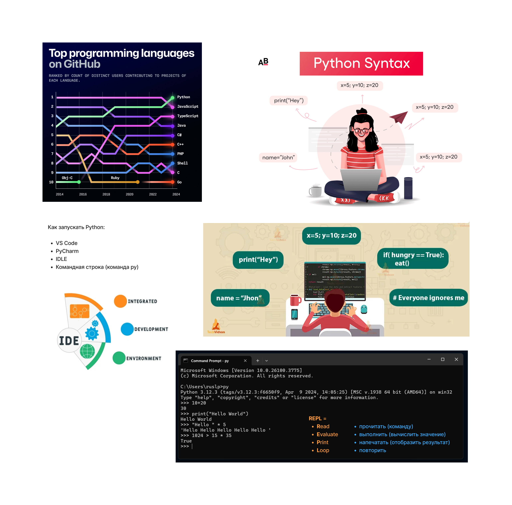

Python — один из самых популярных языков программирования (на графике видно, что он лидирует на GitHub).
Его используют для:
Чтобы писать код на Python, нужны специальные программы или среды:
py или
python).
IDE (Integrated Development Environment) — это программа, которая помогает писать код:
x = 5 # Записываем число 5 в переменную x
name = "John" # Записываем строку "John" в переменную name
print("Hey") # Печатаем текст "Hey" на экран
print(x) # Печатаем значение переменной x (5)
if hungry == True: # Если переменная hungry равна True
eat() # Выполняем функцию eat()
# Все, что после # — комментарий. Компьютер его игнорирует
REPL — интерактивная оболочка, где можно быстро проверять код:
Примеры:
>>> 10 + 20 # Сложение
30
>>> print("Hello World") # Вывод текста
Hello World
>>> "Hello " * 5 # Умножение строки
'Hello Hello Hello Hello Hello '
>>> 1024 > 15 * 35 # Сравнение чисел
True
Домашнее задание:
Python — это просто и весело! 😊
